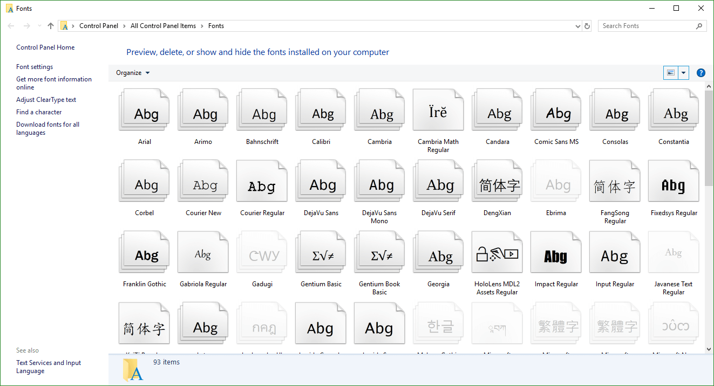
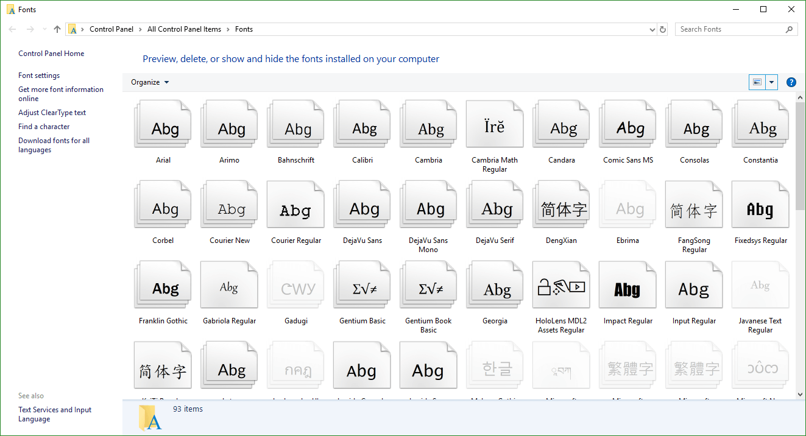

When East meets West
Web typography and how it can inspire modern layouts
What does the web mean to you?


Sources: Worldometers, Ethnologue, W3Techs

Internationalisation (i18n)
“To ensure that the technology supports text in any writing system of the world.”
—W3C Internationalisation
Do developers even care about typography?
“Web design is 95% typography”
—Oliver Reichenstein
“Typography is writing with prefabricated letters”
—Gerrit Noordzij
Phoenician alphabet
甲骨文
Hippopotamus
(English) 12 letters
河马
וכשבזרועותיהם
(Hebrew) 13 letters
抱
Grianghrafadóireachta
(Irish) 21 letters
摄影


The web is a unique medium of its own
Web fonts
The CSS3 Fonts specification describes the basic controls CSS provides for selecting and using fonts within documents.

What is a font?
 

And what are glyphs?


Font formats for web use
| WOFF2 (Web Open Font Format 2) |


|
| WOFF (Web Open Font Format) |
|
| OTF (OpenType) |

|
| TTF (TrueType) |

|
| EOT (Embedded Open Type) |
|
| SVG (Scalable Vector Graphics) |

|
@font-face rule
@font-face {
font-family: 'Magnetic Pro';
src: url('../fonts/magnetic-pro-light.woff2') format('woff2'),
url('../fonts/magnetic-pro-light.woff') format('woff');
}

Anatomy of an @font-face rule
@font-face {
font-family: <family-name>
src: [ <url> [format(<string> #)]? | <font-face-name> ] #
font-style: normal | italic | oblique
font-weight: normal | bold | 100 | 200 | 300 | 400 | 500 | 600 | 700 | 800 | 900
font-stretch: normal | ultra-condensed | extra-condensed | condensed | semi-condensed | semi-expanded | expanded | extra-expanded | ultra-expanded
unicode-range: <urange> #
font-variant: normal | none | [ <common-lig-values> || <discretionary-lig-values> || <historical-lig-values> || <contextual-alt-values> || stylistic(<feature-value-name>) || historical-forms || styleset(<feature-value-name> #) || character-variant(<feature-value-name> #) || swash(<feature-value-name>) || ornaments(<feature-value-name>) || annotation(<feature-value-name>) || [ small-caps | all-small-caps | petite-caps | all-petite-caps | unicase | titling-caps ] || <numeric-figure-values> || <numeric-spacing-values> || <numeric-fraction-values> || ordinal || slashed-zero || <east-asian-variant-values> || <east-asian-width-values> || ruby ]
font-feature-settings: normal | <feature-tag-value> #
}Basic CSS font properties
font-size |
Indicates the desired height of the glyphs. Takes absolute or relative values. |
font-weight |
Specifies the weight of the glyphs in the font. Can use keywords or numerical values. |
font-style |
Allows italic or oblique faces to be selected. |
font-stretch |
Selects a normal, condensed or expanded face from a font family. Range spans over 9 keywords. |
font-size-adjust |
Adjusts the font-size to preserve the x-height of the first choice font. |
font-synthesis |
Controls whether user agents are allowed to synthesize bold or oblique font faces when missing. |
Anatomy of an @font-face rule
@font-face {
font-family: <family-name>
src: [ <url> [format(<string> #)]? | <font-face-name> ] #
font-style: normal | italic | oblique
font-weight: normal | bold | 100 | 200 | 300 | 400 | 500 | 600 | 700 | 800 | 900
font-stretch: normal | ultra-condensed | extra-condensed | condensed | semi-condensed | semi-expanded | expanded | extra-expanded | ultra-expanded
unicode-range: <urange> #
font-variant: normal | none | [ <common-lig-values> || <discretionary-lig-values> || <historical-lig-values> || <contextual-alt-values> || stylistic(<feature-value-name>) || historical-forms || styleset(<feature-value-name> #) || character-variant(<feature-value-name> #) || swash(<feature-value-name>) || ornaments(<feature-value-name>) || annotation(<feature-value-name>) || [ small-caps | all-small-caps | petite-caps | all-petite-caps | unicase | titling-caps ] || <numeric-figure-values> || <numeric-spacing-values> || <numeric-fraction-values> || ordinal || slashed-zero || <east-asian-variant-values> || <east-asian-width-values> || ruby ]
font-feature-settings: normal | <feature-tag-value> #
}@font-face {
font-family: 'Magnetic Pro';
src: url('magnetic-pro-light.woff2') format('woff2'),
url('magnetic-pro-light.woff') format('woff');
font-weight: normal;
font-style: normal;
}
@font-face {
font-family: 'Magnetic Pro';
src: url('carmelitregular.woff2') format('woff2'),
url('carmelitregular.woff') format('woff');
font-weight: normal;
font-style: normal;
unicode-range: U+05D5, U+05DB, U+05E9, U+05D1, U+05D6, U+05E8, U+05D5, U+05E2, U+05D5, U+05EA, U+05D9, U+05D4, U+05DD, U+05D0;
}Declare your Latin fonts first
font-family: 'Gentium Basic', 'PingFang TC', 'Microsoft JhengHei', '微軟正黑體', 'Heiti TC', '黑體-繁', sans-serif;Font rendering for Mac and Windows is different, and sometimes the Latin characters in Chinese fonts don't look good on Windows.
Put your font names in quotes. Just in case.
Font feature properties
font-kerning

|
font-variant-position

|
font-variant-position-ligatures

|
font-variant-numeric

|
font-variant-caps

|
font-variant-alternates

|
font-variant-east-asian

font-feature-settings
Provides low-level control of advanced OpenType features
- aalt
- abvf
- abvm
- abvs
- afrc
- akhn
- blwf
- blwm
- blws
- calt
- case
- ccmp
- cfar
- cjct
- clig
- cpct
- cpsp
- cswh
- curs
- cv01-cv99
- c2pc
- c2sc
- dist
- dlig
- dnom
- dtls
- expt
- falt
- fin2
- fin3
- fina
- flac
- frac
- fwid
- half
- haln
- halt
- hist
- hkna
- hlig
- hngl
- hojo
- hwid
- init
- isol
- ital
- jalt
- jp78
- jp83
- jp90
- jp04
- kern
- lfbd
- liga
- ljmo
- lnum
- locl
- ltra
- ltrm
- mark
- med2
- medi
- mgrk
- mkmk
- mset
- nalt
- nlck
- nukt
- numr
- onum
- opbd
- ordn
- ornm
- palt
- pcap
- pkna
- pnum
- pref
- pres
- pstf
- psts
- pwid
- qwid
- rand
- rclt
- rkrf
- rlig
- rphf
- rtbd
- rtla
- rtlm
- ruby
- rvrn
- salt
- sinf
- size
- smcp
- smpl
- ss01
- ss02
- ss03
- ss04
- ss05
- ss06
- ss07
- ss08
- ss09
- ss10
- ss11
- ss12
- ss13
- ss14
- ss15
- ss16
- ss17
- ss18
- ss19
- ss20
- ssty
- stch
- subs
- sups
- swsh
- titl
- tjmo
- tnam
- tnum
- trad
- twid
- unic
- valt
- vatu
- vert
- vhal
- vjmo
- vkna
- vkrn
- vpal
- vrt2
- vrtr
- zero
Web layouts over the years


2017: the year of CSS Grid

“We need to translate ideas that we find in other places, not transfer them.”
—Jen Simmons
The magic of Writing Modes
CSS Writing Modes Level 3 defines CSS features to support for various international writing modes, such as left-to-right (e.g. Latin or Indic), right-to-left (e.g. Hebrew or Arabic), bidirectional (e.g. mixed Latin and Arabic) and vertical (e.g. Asian scripts).
You can make your browser literally turn on its side from left-to-right.
🙃Or make it read from right-to-left.
🙂Vertical text is fun!
writing-mode property
| horizontal-tb | 从1987到现在 |
| vertical-rl | 从1987到现在 |
| vertical-lr | 从1987到现在 |
| sideways-rl* | 从1987到现在 |
| sideways-lr* | 从1987到现在 |
text-orientation property
text-combine-upright property

Willem de Kooning
If Jackson Pollock was the public face of the New York avant-garde, Willem de Kooning could be described as an artist’s artist, who was perceived by many of his peers as its leader. He was born in Rotterdam, where he grew up in an impoverished household and attended the Rotterdam Academy, training in fine and commercial arts. In 1926, the adventurous young artist stowed away on a ship bound for Argentina. While the ship was docked in Virginia, de Kooning slipped off, skirted immigration, and made his way to New Jersey—and so began the rest of his life.
CSS Logical Properties


A long list of references
- Consumer barriers to mobile internet adoption in Asia
- The Relationship between Local Content, Internet Development and Access Prices
- Usage of content languages for websites
- The faces of Microsoft
- No @font-face Syntax will ever be Bulletproof, Nor Should It Be.
- 字体漫谈
- Source Han Serif / Noto Serif CJK History & Development
- Chinese Fonts & Related Issues
- Zhang, X. & Han, Q. (2009). The history of Chinese printing: (illustrated). Paramus, N.J: Homa et Sekey Books.
- Brokaw, C. & Reed, C. A. (2010). From woodblocks to the Internet: Chinese publishing and print culture in transition, circa 1800 to 2008. Leiden: Brill.
- Tsien T. (2011). Collected writings on Chinese culture. Hong Kong: The Chinese University Press.
- Tsien, T. & Shaughnessy, E. L. (2013). Written on bamboo & silk: the beginnings of Chinese books & inscriptions. Chicago: The University of Chicago Press.
- Houston, K. (2016). The book: a cover-to-cover exploration of the most powerful object of our time. New York: W.W. Norton & Company.
- 厉致谦 (2013). 西文字体的故事. 上海市: 同济大学出版社.
- Choi, K. E., & Kim, M. S. (2015). A Comparative Study on the Sociocultural Drivers in the Development of Printing Technology in Korea and Europe. Korea Journal, 55(4), 7-35.
- Park, H. O. (2014). The History of Pre-Gutenberg Woodblock and Movable Type Printing in Korea. International Journal of Humanities and Social Science, 4(9), 1.
- Haralambous, Y., & Horne, P. S. (2007). Fonts & encodings.